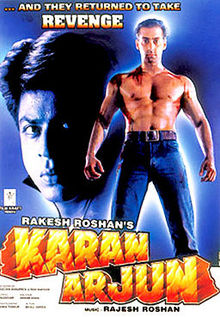

SRK MANIA
Home
Songs
Movies

Karan Arjun (1995)
Label: Tips Music
Bhangra Paale Aaja Aaja
Ek Munda
Gup Chup Gup Chup
Jaati Hoon Mai
Ye Bandhan To Pyar Ka Bandhan Hai
Ye Bandhan To Pyar Ka Bandhan II
Songs may take some time to load.
To download right click on the play/pause button and click 'save audio as' option.